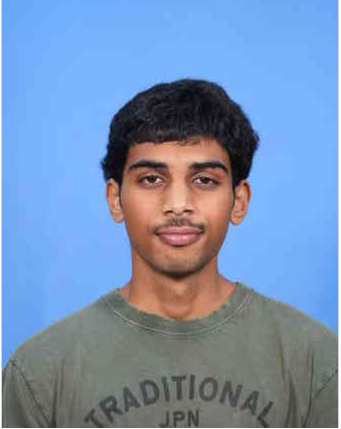

I'm Varshith. I am a freshman, studying CSD at IIITH. I chose to do a dual degree because I felt like it was more interesting. I was born in India, moved to the U.K. when i was in second grade, and came back after seven years. In my free time, I like to watch movies and sports. I support Manchester United (the football team) and Sunrisers Hyderabad (the cricket team). I like to play video games on my PS5. My favorite video game is Assassins Creed IV: Black Flag. I'm also a big fan of gangster movies, with Goodfellas being my favourite movie of all time. I enjoy working on hands-on projects preferably as a group or individually, like building something real and useful and hope what I learn can help me achieve that. In the future, my plan is to get a high paying job so I can travel the world.
BEING BORN
2007
I was born on October 2nd 2007. This is also the International Day of Non Violence which was established in the same year I was born.
MOVE TO THE UK
2015
I was seven years old at this time, when I took my first ever flight. I don't really remember much before this.
HIGH SCHOOL
2019
High school was a very new experience for me. Previously I was in a very small school with about 30 people in each year, now there were 200. I also moved to a big city for the first time and became a lot more independent as I grew up.
RETURN TO INDIA
2022
This was a pretty big change in my life as I had spent most of my life I was conscious in the UK, so it took a while to get used to - especially the weather.
IIITH
2025
After a lot of hard work and effort, I got into this college. Although this wasn't my first choice, I'm pretty happy to be here and look forward to the next few years.